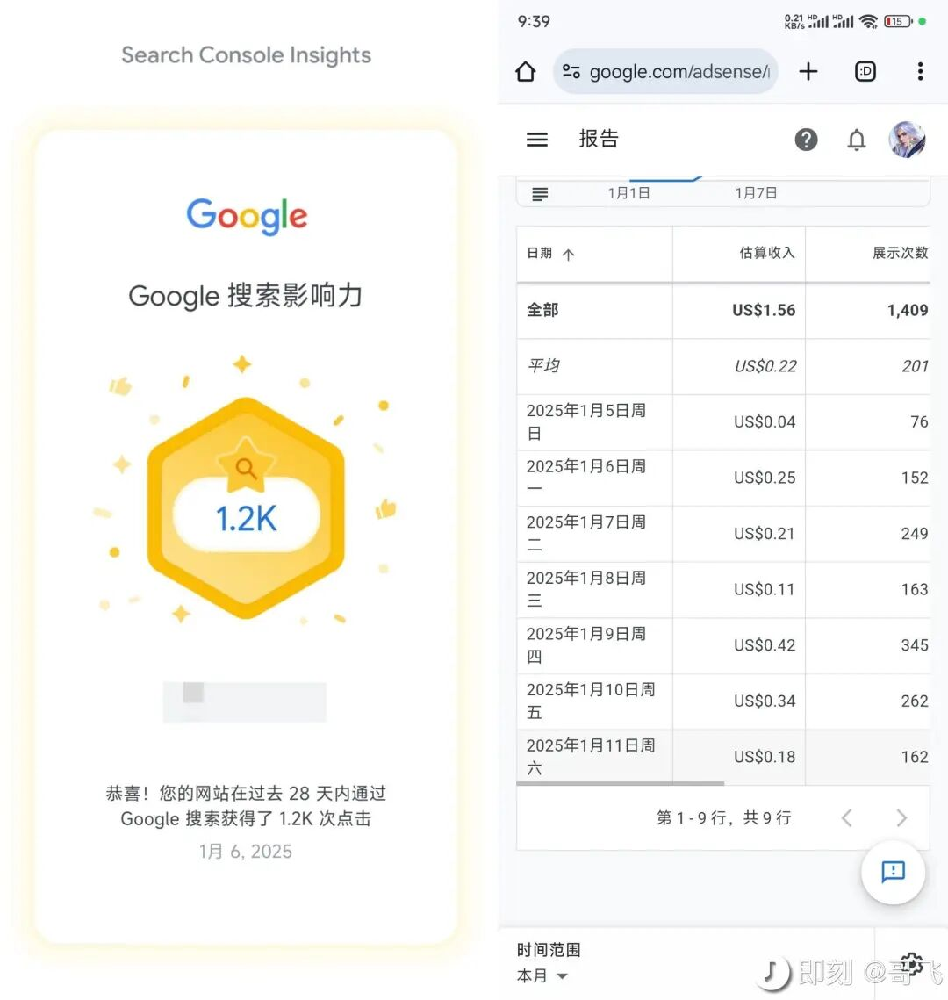
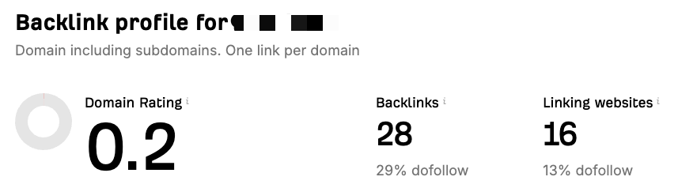
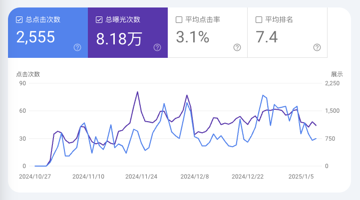
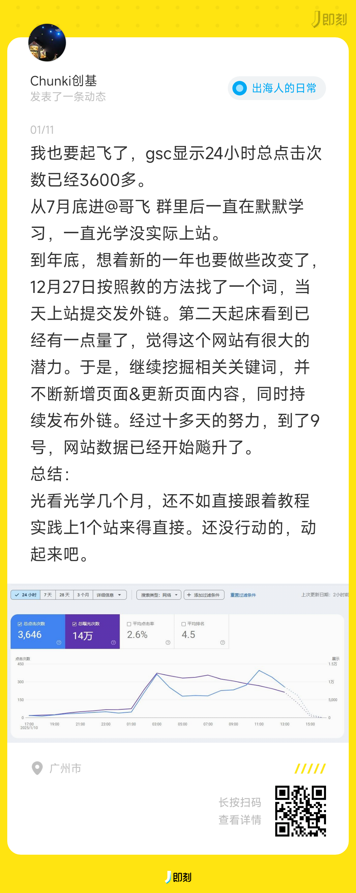
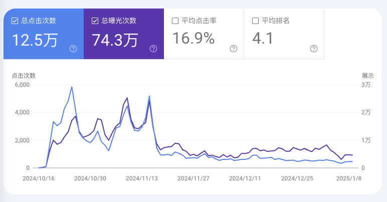
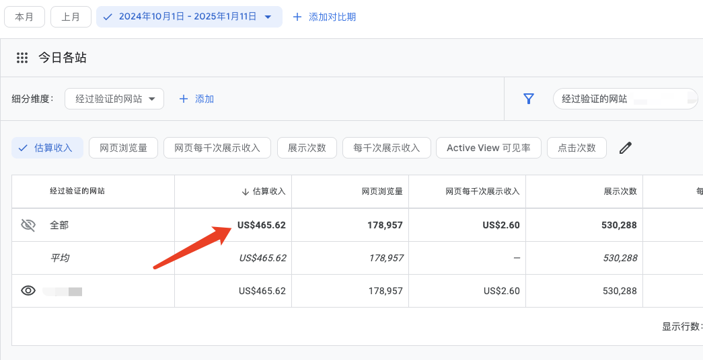
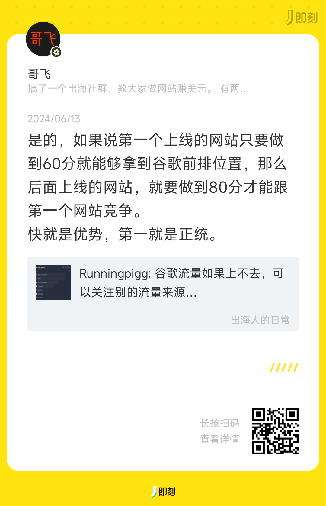

大家好，我是哥飞。
两个多月前，哥飞写了自己老婆的故事《记一个冉冉升起的出海新星》。
两个多月过去了，她的网站终于赚到第一美元了。

起步艰难呀，尤其她还没有太多时间，只能业余搞搞。
不过她现在倒是信心满满，说，那就应该多做几个页面，多做几个网站，多赚几美元。
11月做了这个网站后，她并没有每天都去打理维护，因为她有更多其它的事情要忙。所以只能偶尔实践一下我教的方法，而且很多时候是我想起来了，催她一下，她就去做一点。
然后上周，去申请Adsense了，尽管每天只有几十个访问量，但是因为网站页面还挺多，看起来比较像是一个认真做出来的网站，于是很快就审核通过了。
周日开始挂广告，每天几毛钱几毛钱的攒，到昨天终于攒到1美元了。
也算是一个小小的里程碑吧。
其实如果会早点去申请Adsense，早就能开始赚到第一美元了。
这次她做这个网站，哥飞没有动用任何老站资源，所有外链都是她根据哥飞教的方法自己去做的，所以只搞了16个外链。

看下面的GSC数据，对于一个写了十几年java程序，从来没有给自己做过赚钱网站的人来说，第一个网站，有这个访问量，开局还行。

所以，哥飞很有自信的说，赚第一美元这事，真的是有手就行，只要你愿意动手，就能够实现。
最怕的是完全不动手，那就神仙也帮不了了。
下面这位哥飞社群里的朋友就是，终于体会到了动手的正反馈了。
他跟着哥飞的方法动手去找了第一个关键词，做了第一个网站，结果刚上线24小时内，就拿到了3600多个点击。

然后哥飞发现，网站做多了，真的有一些遗漏，忘记处理。

上面这个网站我10月15日注册的域名，上线之后，有排名，有点击，后来也去申请Adsense了，赚了465美元了。

结果今天才发现，我一个外链都没安排。
也就是完全没有外链的情况下，拿到了排名，拿到了流量，三个月时间，还赚了四百多美元。
我今天为什么会发现没外链呢？
是发现排名下降了，点击下降了，之前最高时每天有四千多点击，最近一段时间只剩四五百了。
然后去搜索关键词，发现有两个网站排我前面了，于是再去查是不是对方外链比我多。
一查才发现，第一名29个外链，我0外链。
为什么我0外链能够拿到排名和点击呢？

这就是我之前说的先发优势很重要。
但是呢，也不能一直靠先发优势，因为如果后面有人跟你竞争，那么你就会被别人甩下去。
关于这方面的内容，哥飞在《【哥飞SEO教程】谷歌排名的真相》介绍过了。